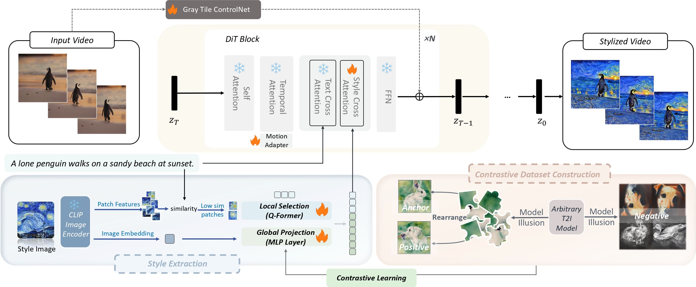

We first obtain patch features and image embedding of the style image from CLIP, then we select the patches sharing less similarity with text prompt as texture guidance, and use a global projection module to transform it into global style descriptions.
The global projection module is trained with a contrastive dataset constructed by model illusion through contrastive learning. The style information is then injected into the model through the decoupled cross-attention.
The motion adapter and gray tile ControlNet are used to enhance dynamic quality and enable content control respectively.
Finally, the modified latent gets back to the remaining layers in the DiT block.